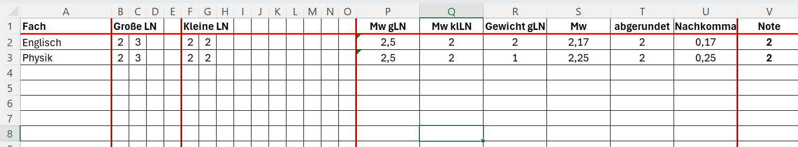
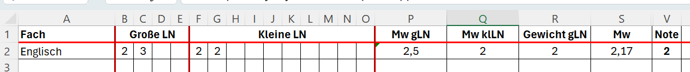

Erstelle eine Tabelle nach diesem Muster:

| Zelle | Funktion |
|---|---|
| P2 | Mittelwert der Zellen B2 bis E2 |
| Q2 | Mittelwert der Zellen F2 bis O2 |
| S2 | (P2*R2+Q2) geteilt durch die (R2+1) |
| T2 | Abrunden(S2;0) |
| U2 | Nachkomma-Teil wird aus S2 und T2 berechnet |
| V2 | Wenn U2<=0,5 ist, dann T2 sonst T2+1 |
Kopiere die Funktionen in die Zeilen 3-15

Die Berechnungen sollen nur angezeigt werden, wenn Noten eingetragen sind. Hierzu verwenden wir bedingte Funktionen.
| Zelle | Bedingte Funktion |
|---|---|
| P2 | Wenn B2="", dann "" sonst Berechnung (s.o.) |
| Q2 | Wenn F2="", dann "" sonst Berechnung (s.o.) |
| S2 | Wenn P2="" oder Q2="", dann "" sonst Berechnung (s.o.) |
| T2 | Wenn S2="", dann "" sonst Berechnung (s.o) |
| U2 | Wenn T2="", dann "" sonst Berechnung (s.o) |
| V2 | Wenn U2="", dann "" sonst Berechnung (s.o) |
Kopiere die Funktionen wieder über das gesamte Tabellenblatt.
Markiere die Spalten T und U und blende sie durch einen Rechtsklick aus.